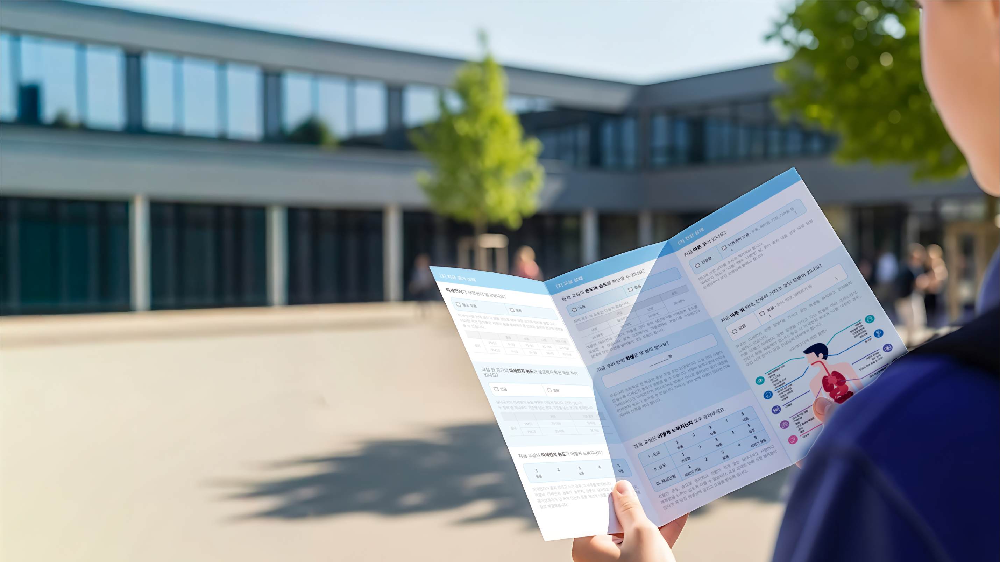

건네는 면과
설명하는 면
시선을 끄는 면
리플렛을 건네는 순간 '무엇을 하는 제품인지'가 전달되도록, 정보를 최소화하고 제품 비주얼과 핵심 가치 3가지만 담았습니다.
- 제품 비주얼
- 핵심 가치 3가지
- 브랜드 인상


설명하는 면
상세 정보는 모두 뒷면에 모아, 대화 흐름에 맞춰 리플렛을 뒤집어가며 시스템 구성과 도입 효과를 짚어 설명할 수 있게 했습니다.
- 시스템 구성도
- 도입 효과 6가지
- 연락처
흩어진 기술 용어를
하나의 이야기로
B2B 솔루션의 낯선 용어와 복잡한 구성을, 처음 보는 거래처 담당자도 이해할 수 있는 한 장으로 정리해야 했습니다.
낯선 기술 용어
전문 용어가 많은 B2B 솔루션을 처음 접하는 거래처 담당자도 이해할 수 있어야 했습니다.
복잡한 시스템 구성
카메라, 장비, 모바일 앱, 클라우드로 이어지는 구성을 한 면 안에서 설명할 수 있어야 했습니다.
결합형 제품의 정체성
CCTV와 Edge 모듈이 결합된 하나의 솔루션이라는 제품 구성이 한눈에 인식되어야 했습니다.
두 가지 방향,
하나의 결론
앞면 2종, 뒷면 1종의 시안을 서로 다른 두 방향으로 제안했습니다.

시각적 임팩트 중심의 애드버토리얼형
중앙 정렬 타이틀과 넓은 여백, 원형 아이콘으로 엮은 핵심 가치 3가지로 구성해 첫인상과 주목도를 우선했습니다.


정보 전달 중심의 브로슈어형
앞면에는 제품 이미지와 6가지 도입 효과, 뒷면에는 시스템 구성도와 핵심 기능 3가지를 배치해 설명의 정확성과 가독성을 우선했습니다.
두 방향의 장점을 결합하다
시안 A
시안 B
시안 C
결합 비주얼
최종안 · 앞면
시안 A의 주목도 높은 구성과 핵심 가치 모티프를 이어받고, 카메라와 Edge Box를 점선으로 연결한 결합 비주얼을 메인으로 삼았습니다.
시안 C의 시스템 구성도를 PC · USER · 멀티 채널까지 확장하고, 시안 B의 도입 효과 6가지를 카드 그리드로 옮겼습니다.
CCTV와 Edge 모듈이 결합된 하나의 솔루션으로 보였으면 좋겠어요.
✓ 반영 완료하나의 솔루션으로
보이게
클라이언트 측 검토 과정에서 제품 정체성을 시각적으로 명확히 전달해야 한다는 의견이 있었습니다. 이를 반영해 카메라와 Edge Box를 점선으로 연결한 결합 비주얼을 앞면의 메인으로 삼았습니다.
| 시안 A | 시안 B · C | 최종안 | |
|---|---|---|---|
| 방향 | 애드버토리얼형 | 브로슈어형 | 두 방향의 결합 |
| 구성 | 앞면 | 앞면 + 뒷면 | 앞면 + 뒷면 |
| 강점 | 높은 주목도, 브랜드 인상 | 정보의 정확성, 높은 가독성 | 주목도와 설명력의 균형 |
| 메인 비주얼 | Edge Box 단독 | Edge Box 단독 | CCTV + Edge Box 결합 |
| 최종안에 남은 것 | 핵심 가치 모티프 | 시스템 구성도, 도입 효과 | 최종 선정 |
제품 정체성을
메인 비주얼로
CCTV × Edge Box 결합 비주얼피드백 반영
카메라와 Edge Box를 대각선으로 배치하고 점선으로 연결해, 두 장비가 하나의 솔루션임을 메인 비주얼로 시각화했습니다.
핵심 가치의 흐름
시안 A의 모티프를 이어받아 핵심 가치 3가지를 곡선 라인 위 원형 아이콘으로 엮고, 시선이 위에서 아래로 흐르도록 했습니다.
공동 브랜드 표기
SKT Enterprise와 NCL 로고를 나란히 두고 제품명을 그라데이션 타이포로 강조해 신뢰감을 주었습니다.
CCTV × Edge Box 결합 비주얼
카메라와 Edge Box를 점선으로 연결해 하나의 솔루션임을 시각화
핵심 가치의 흐름
곡선 라인 위 원형 아이콘으로 시선이 위에서 아래로 흐르도록 구성
공동 브랜드 표기
두 로고를 나란히 두고 제품명을 그라데이션 타이포로 강조
STEP 01 / 03
짚어가며 설명하는 뒷면

설명을 위한 시스템 구성도
CCTV → Site Box → PC · USER로 이어지는 흐름을 왼쪽에서 오른쪽으로 배치하고, 장비마다 아이콘과 기능 목록을 붙여 손가락으로 짚어가며 설명할 수 있게 했습니다.
- 실선 — 장비 간 직접 연결
- 점선 — LTE / 5G 무선 통신 경로

6가지 도입 효과 카드
도입 효과를 아이콘 · 제목 · 짧은 설명의 2×3 카드로 정리했습니다. 고객이 관심 있는 항목만 골라 읽을 수 있도록, 제목만으로 내용이 파악되게 구성했습니다.
제작 사양
| 규격 | A4 (210 × 297 mm) 양면 |
|---|---|
| 용도 | 거래처 미팅용 영업 리플렛 |
| 용지 · 후가공 | 용지명 / 평량 / 코팅 등 |
| 수량 | 제작 수량 |
